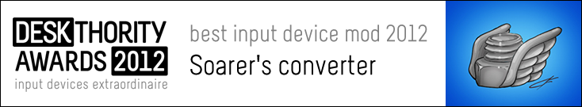

Introduction
A Teensy-based project to adapt XT, AT, PS/2 and some 122-key terminal keyboards to USB, also known simply as "Soarer's Converter".
Features
Keyboard protocols supported:
- PC/XT (scan code set 1)
- AT (scan code set 2)
- PS/2 (MF2) (extended scan code set 2)
- Terminal e.g. 3179/318x/319x (scan code set 3)
Configurable Features: v0.997+
- Remapping
- Layers
- Macros
- On-the fly Config Selection
Other Features:
- Full NKRO, if the keyboard supports it (even on Macs!)
- Boot mode support (even with faulty BIOS!)
- Auto-detection of the keyboard type
- XT and AT boards are remapped correctly for PrtSc etc.
- 1000Hz polling using Full Speed USB
- Media and Power key support
- Jump to bootloader function (update firmware without pressing the reset button) v1.0+
- Support for 'almost' PC/XT protocol keyboards, e.g. Leading Edge DC-2014 v1.1+
- Keyboard Reset output (required by some PC/XT keyboards) v1.1+
- Five auxiliary key inputs (for extra keys, buttons, or footswitches) v1.1+
- Support for IBM RT keyboards v1.11+
Award!

Origins
Way back in 2010, a Teensy landed on my doormat.
My goal then was simply "to make a USB adapter for my AT model F".
Why? I had modified the keyboard, and existing PS/2 to USB adapters didn't support the unusual codes created by the extra key positions.
A few months later, the first release was made available on geekhack, in my project thread.
On the release of v1.0, I also made it available on Deskthority.
I guess I got a little carried away :-)